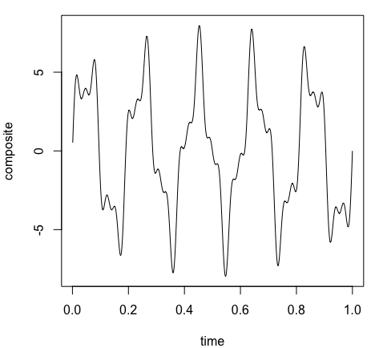
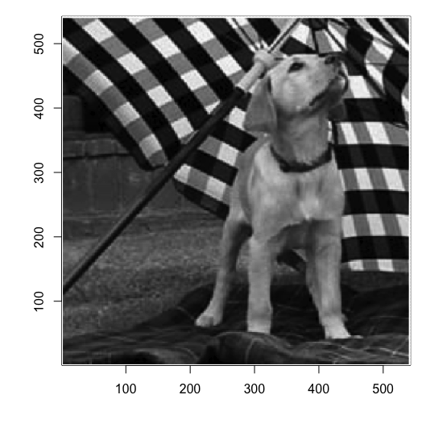
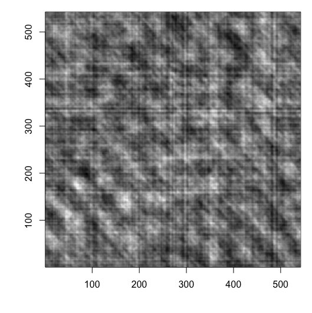

# Specify sampling rate (Hz)
samp_rate <- 1000
# Specify duration of recording (s)
rec_dur <- 1
# Given sampling rate and recording duration, how many samples?
n_samples <- samp_rate * rec_dur
# Create time vector (in seconds)
time <- (1:n_samples) / samp_rate1 Introduction
In this practical, you’ll apply one- and two-dimensional Fourier analysis using R. We’ll explore sine wave generation, Fourier transforms, and practical use in image processing. This practical does not require any additional R packages. However, you will need to know the following formula:
\[\text{waveform} = \text{amplitude} \times \sin(2\pi \times \text{frequency} \times \text{time})\]
This formula generates sine waves with various frequencies and amplitudes.
Learning Objectives
As a reminder, by the end of the week you should be able to:
- Describe the relationship between amplitude, phase, and frequency in a Fourier representation.
- Interpret one-dimensional Fourier spectra to identify the dominant frequencies, including the DC component.
- Explain the relationship between sampling rate and frequency resolution.
- Interpret two-dimensional Fourier spectra to identify spatial frequency characteristics.
- Apply Fourier analysis in R to transform, visualise, and interpret one- and two-dimensional data.
The Scary Math!
Some sections include equations for those who are interested in the mathematical background of Fourier analysis. These are provided to show how the R code relates to the underlying theory, but you do not need to follow the mathematics to complete the practical. All essential ideas can be understood by running and interpreting the code.
2 Setting up
Start with the usual set-up steps for the practical sessions:
- Open your
ARM_Practicals.Rprojfile in RStudio - Create a new script and save it in your
scripts/folder asARM8_Fourier-analysis.R - Download the
dog.RDatafile for Week 8 from the VLE. Save it in yourdata/folder.
Tip
If you don’t have this folder, repeat the set-up steps outlined in 0_SetUp.pdf from Week 1.
3 Generating a waveform
Before generating waveforms, we need to define the key parameters that control how the signal is represented in time. These parameters determine how many data points we collect, how long the signal lasts, and how finely it is sampled.
Using the time vector we just generated, we can create a sine wave as follows:
# Create waveform at 1Hz with an amplitude of 1
w1 <- 1 * sin(2 * pi * 1 * time) To change the frequency, change the frequency term in the equation. For example, to generate a 5 Hz sine wave:
# Make waveform 5Hz with an amplitude of 1
w1 <- 1 * sin(2 * pi * 5 * time)Next, we will create a complex waveform by summing three different sine waves with different frequencies and amplitudes:
# 5Hz waveform with an amplitude of 5
w1 <- 5 * sin(2 * pi * 5 * time)
# 16Hz waveform with an amplitude of 2
w2 <- 2 * sin(2 * pi * 16 * time)
# 27Hz waveform with an amplitude of 1
w3 <- 1 * sin(2 * pi * 27 * time)
# Sum together the three waves
composite <- w1 + w2 + w3 You can plot the composite waveform using the code below. Note: In the line of code below, the type argument uses the lowercase L, not the number 1!
# Plot a line graph of the composite waveform
plot(x = time, y = composite, type = "l")If done correctly, your plot should look similar to the one below.

Show solution
w1 <- 1 * sin(2 * pi * 2 * time) # 2Hz, 1uv
w2 <- 5 * sin(2 * pi * 18 * time) # 18Hz, 5uv
w3 <- 3 * sin(2 * pi * 5 * time) # 5Hz, 3uv
composite_alt <- w1 + w2 + w3
plot(x = time, y = composite_alt, type = "l")4 Fourier Analysis
Next, we will Fourier transform the waveform and look at its spectrum. We need to compute the Fourier spectrum using the fft function and then take the absolute (abs) values. We could do each of these operations separately:
# Compute the fast Fourier transform
fftwave <- fft(composite)
# Take absolute values
fftwave <- abs(fftwave) Or, combine everything into one line:
# Do the above all in one line
fftwave <- abs(fft(composite)) You can choose either method; the result will be the same! Next, we can plot the spectrum like this:
# Plot amplitude spectrum
plot(fftwave,
type = "l",
xlab = "Frequency (Hz)",
ylab = "Amplitude") You will notice that most of the interesting information appears at the far left of the plot (and is mirrored on the far right). This is because the x-axis currently represents array indices, not frequency values. To make the plot more meaningful, we can construct an x-axis that represents actual frequencies in Hertz (Hz). The frequency at each point in the Fourier spectrum is determined by:
\[f = \frac{k}{N_\text{samples}} \times \text{sampling rate}\]
where \(f\) is the frequency in Hz. \(k\) is the frequency bin index (that is, a small range of frequencies in the spectrum). For example, \(k = 1\) corresponds to the first non-zero frequency, \(k = 2\) to the next, and so on. \(N_\text{samples}\) is the total number of samples in the signal and depends on both the sampling rate and duration (e.g., a 1-second recording at 1000Hz has \(N = 1000\) samples, whilst a 2-second recording at 1000Hz has \(N = 2000\) samples).
Using this formula, we can create an appropriate frequency axis for the Fourier spectrum as follows:
# Create frequency axis (up to Nyquist frequency)
freq <- seq(from = 0,
to = samp_rate / 2,
length.out = n_samples / 2)
# Plot the first 50 entries only
plot(x = freq[1:50],
y = fftwave[1:50],
type = "l",
xlab = "Frequency (Hz)",
ylab = "Amplitude") The plot displays the frequency spectrum of the sine waves we generated. The x-axis shows frequency in Hertz (Hz), and the y-axis shows the amplitude at each frequency. The axis starts at 0 because the first value represents the direct current (DC) component, which corresponds to the average value of the signal over time. A purely oscillating waveform with no offset will have a DC component of zero. To confirm that the peaks in the spectrum match the original wave frequencies (5, 16, and 27 Hz), we can add vertical lines at those positions:
# Plot vertical lines at the Hz positions we made (5, 16 and 27Hz)
abline(v = c(5, 16, 27), # x-axis positions
col = c("red", "green", "blue")) # Colours The lines should appear at the peaks in the spectrum.
4.1 Sampling Duration and Rate
When working with waveforms, it’s important to account for both the sampling duration (how long data is collected) and the sampling rate (how often data points are recorded). The examples above simulate a 1-second waveform at a 1000Hz sampling rate. Let’s explore how changes in the sampling duration and sampling rate affect our code.
4.1.1 Sampling Duration
When we record a waveform for a longer period, we collect more samples; this provides more information about the signal and allows the Fourier spectrum to show finer detail. In other words, we can separate frequencies that are closer together. The number of samples collected depends on how long the recording lasts and how many samples are taken per second (the sampling rate). If we increase the recording duration while keeping the sampling rate the same, we collect more samples overall. This gives the Fourier transform more data to work with and improves how precisely different frequencies can be distinguished. Let’s see what happens when we plot the amplitude spectrum for a recording that lasts 2 seconds instead of 1 second, keeping the sampling rate at 1000Hz.
# Specify sampling rate (Hz)
samp_rate <- 1000
# 2-second recording
rec_dur <- 2
# How many samples?
n_samples <- samp_rate * rec_dur
# Calculate time
time <- (1:n_samples) / samp_rate
# Generate individual and composite waveform
w1 <- 5 * sin(2 * pi * 5 * time)
w2 <- 2 * sin(2 * pi * 16 * time)
w3 <- 1 * sin(2 * pi * 27 * time)
composite <- w1 + w2 + w3
# Perform fast Fourier transform
fftwave <- abs(fft(composite))
# Frequency axis
freq <- seq(from = 0,
to = samp_rate / 2,
length.out = n_samples / 2)
# Plot the first 50 points of the spectrum
plot(x = freq[1:50],
y = fftwave[1:50],
type = "l",
xlab = "Frequency (Hz)",
ylab = "Amplitude")When you run this code, the plot will still display only the first 50 frequency points, which correspond to frequencies up to around 25Hz. Because the recording duration has been increased to 2 seconds, the Fourier transform now includes twice as many samples; this increases the number of frequency points available in the spectrum and improves the frequency resolution (the spacing between frequency bins becomes smaller). This does mean the 27Hz frequency is now missing from the plot.
Show solution
plot(x = freq[1:99],
y = fftwave[1:99],
type = "l",
xlab = "Frequency (Hz)",
ylab = "Amplitude")4.1.2 Sampling Rate (Nyquist Limit)
The sampling rate defines how often data points are recorded, measured in Hertz (Hz). A higher sampling rate means more samples are taken each second, producing a smoother and more detailed digital signal.
In the previous examples, we used a sampling rate of 1000Hz, meaning 1000 samples were recorded every second. Any change in the sampling rate will impact the level of detail we can observe in the signal. For example, if we decrease the sampling rate, the waveform will contain far fewer samples in the same time period. This means fewer data points are available to describe the signal, and higher-frequency components will no longer be represented accurately; this is because lowering the sampling rate reduces the Nyquist frequency (half the sampling rate), which defines the highest frequency that can be measured. For instance, with a sampling rate of 50Hz, the Nyquist limit is 25Hz, so any true frequencies above this value cannot be measured correctly. In our signal, the component at 27Hz would exceed this limit. When this happens, the Fourier transform produces a false lower frequency that reflects back into the measurable range. This effect is known as aliasing. Using the code below, we can demonstrate what this looks like.
# Specify sampling rate (Hz)
samp_rate <- 50
# 2-second recording
rec_dur <- 1
# How many samples?
n_samples <- samp_rate * rec_dur
# Calculate time
time <- (1:n_samples) / samp_rate
# Generate individual and composite waveform
w1 <- 5 * sin(2 * pi * 5 * time)
w2 <- 2 * sin(2 * pi * 16 * time)
w3 <- 1 * sin(2 * pi * 27 * time)
composite <- w1 + w2 + w3
# Perform fast Fourier transform
fftwave <- abs(fft(composite))
# Frequency axis
freq <- seq(from = 0,
to = samp_rate/2,
length.out = n_samples/2)
# Plot the amplitude spectrum
plot(x = freq[1:50],
y = fftwave[1:50],
type = "l",
xlab = "Frequency (Hz)",
ylab = "Amplitude")4.1.3 Aliasing
Aliasing occurs when the sampling rate is too low to capture how quickly a signal changes. In practice, it looks as though the signal is oscillating more slowly than it really is. In our example, the waveform includes a component at 27Hz, but with a 50Hz sampling rate, the highest measurable frequency is only 25Hz. Because 27Hz exceeds this limit, it appears in the spectrum as a lower frequency, near 23-24Hz, as shown on the plot.
This is why it is important to consider the frequencies you are interested in before collecting data. The sampling rate must be set high enough (that is, at least twice the highest frequency you wish to measure) to avoid aliasing and ensure that all components of the signal are represented accurately in the spectrum.
4.1.4 Quick Summary
The sampling duration determines how finely frequencies can be distinguished from each other (the resolution of the spectrum). The sampling rate, on the other hand, determines how high a frequency you can measure at all.
4.2 Inverse Fourier Transform
So far, we have used the Fourier transform to move from the time domain (a waveform) to the frequency domain (a spectrum). Now, we will reverse the process to see how a signal can be reconstructed from its frequency components using the inverse Fourier transform. We can start by defining the basic parameters for a 1-second signal sampled at 1000 Hz:
# Sampling rate (Hz)
samp_rate <- 1000
# Recording duration (s)
rec_dur <- 1
# Total number of samples
n_samples <- samp_rate * rec_dur
# Calculate time
time <- (1:n_samples) / samp_rateNext, create a vector of zeros to represent the frequency spectrum for this 1-second recording:
# Create a vector of zeros (length = number of samples)
synthspec <- rep(0, n_samples)Each position in this vector corresponds to a specific frequency. The first entry represents the DC component (0Hz), the second represents 1Hz, the third 2Hz, and so on.
Now, we will add a single frequency component to this spectrum by setting the fifth entry to 1, which corresponds to a 4Hz sine wave:
# Change the 5th value of the vector to 1 (4Hz)
synthspec[5] <- 1Finally, we can transform this frequency-domain data back into the time domain using the inverse Fourier transform. The Re function keeps only the real part of the result, removing small imaginary rounding errors:
# Perform the inverse Fourier transform and keep real values
synthwave <- Re(fft(synthspec, inverse = TRUE))Show solution
plot(x = time,
y = synthwave,
type = "l",
xlab = "Time",
ylab = "Amplitude")To observe different frequencies, modify the corresponding entry in the synthspec vector. For example, to generate a 10Hz wave, you would adjust the 11th entry in the vector. Remember, you must add 1 to your desired frequency index because the first entry in the vector represents the DC (0Hz) component representing the average frequency.
Show solution
synthspec <- rep(0, n_samples)
synthspec[16] <- 1 # Change the 15th value to 1
synthwave <- Re(fft(synthspec, inverse = TRUE)) # Perform the Fourier transform
plot(x = time,
y = synthwave,
type = "l",
xlab = "Time",
ylab = "Amplitude")5 Creating Control Stimuli via Fourier Analysis
A common control manipulation in image processing is to phase-scramble an image. This means we replace the phase information in the Fourier transform of the image with random phase values while keeping the amplitude unchanged. We will apply this technique to an image of a dog. We will load the image of the dog using the code below.
load("./data/dog.RData")Check that the image has loaded correctly by displaying it with the following code:
# Determine the number of elements in one dimension of the image
nelements <- sqrt(length(dog))
# Set the plotting area to be square
par(pty = "s")
# Display the image
image(
x = 1:nelements, # x-axis coordinates for image pixels
y = 1:nelements, # y-axis coordinates for image pixels
z = dog, # The image data to be displayed
col = grey((0:255)/255), # Convert to black and white
ann = FALSE # Do not add axis labels or titles
)The first line calculates the number of pixels along one side of the image by taking the square root of the total number of pixels (length(dog)). For example, if length(dog) equals 10,000, then sqrt(10000) is 100, meaning the image is 100 × 100 pixels. The second line, par(pty = "s"), makes the plotting area square so that the x- and y-axes are scaled equally. Finally, the image function displays the dog image in black and white.
If done correctly, your furry friend should look something like this:

We can compute the Fourier spectrum like before using the code below.
# Compute the fast Fourier transform of the image
fftdog <- abs(fft(dog))Here, we take the absolute value of the Fourier transform to extract the amplitude spectrum, which represents the strength of each frequency component. The amplitude determines the overall brightness patterns in the image. The Fourier transform also contains a phase spectrum, which encodes the positions and structure of features. By taking the absolute value, we remove the original phase information. To reconstruct an image, both amplitude and phase are required, so we will now generate a new random phase spectrum:
# Generate a new phase spectrum made up of random values
newphase <- 2 * pi * matrix(runif(nelements^2), nrow = nelements)The code above creates a vector of random numbers uniformly distributed between 0 and 1. The total number of values is nelements^2, which equals the total number of pixels in the original image. These random values are then multiplied by \(2\pi\) to convert them into phase angles between \(0\) and \(2\pi\), which is the required range for phase values in Fourier analysis. Finally, the values are reshaped into a square matrix so that the random phase spectrum has the same dimensions as the original image.
Now we need to combine the phase and amplitude information to create a new Fourier spectrum. This step involves using complex numbers, which allow us to represent both the strength (amplitude) and timing (phase) of each frequency component at the same time. You do not need to understand how complex numbers work to complete this step (thankfully!!). In practice, we just need to know that they let us combine the amplitude and phase correctly to reconstruct or modify the image.
To combine the new phase information with the original amplitude spectrum, we first need to create a matrix that represents the phase changes we want to apply:
# Create a exponential term to represent new phase angles
phase_rotation <- exp(1i * newphase)The exp(1i * newphase) command creates a complex-valued matrix where each element represents a rotation by a phase angle. This allows us to adjust the phase of each frequency component while keeping the amplitude unchanged.
Next, we apply this phase information to the original Fourier spectrum of the image:
# Apply the new phase information to the original spectrum
newspectrum <- fftdog * phase_rotationThis combines the amplitude values from the original transform (fftdog) with the new random phase angles (phase_rotation), creating a modified Fourier spectrum. After modifying the spectrum, we must convert it back to the spatial domain (the image space) to see the result. This is done using the inverse Fourier transform, which reconstructs the image from its frequency representation.
Show solution
# Perform the inverse Fourier transform to get back to the spatial domain
dogscramble <- Re(fft(newspectrum, inverse = TRUE))
# Plot the scrambled image
par(pty = "s") # Ensure the plot is square
image(x = 1:nelements,
y = 1:nelements,
z = dogscramble,
col = grey((0:255)/255),
ann = FALSE)If done correctly, your scrambled image should resemble the example below, though it may differ slightly since we didn’t set the random seed beforehand, so different uniform values are being used.

The phase-scrambled image retains the same overall distribution of visual features (the amplitude spectrum) as the original image, making it a suitable control stimulus in visual experiments. Specifically, phase-altered images are used to investigate how phase information affects visual perception and brain activity. By keeping the amplitude spectrum constant but randomising the phase, researchers can separate the effects of phase from those of overall image energy or contrast. However, it is important to note that phase scrambling does change certain properties of the image. Local structure and recognisable shapes are lost, and fine spatial relationships between features are disrupted. These differences should be considered when interpreting results, especially in experiments involving object or scene perception.
6 Summary
Congratulations, you have now applied one- and two-dimensional Fourier analysis in R. You learned to generate and visualise simple and composite sine waveforms, and to use the Fast Fourier Transform (FFT) to convert signals from the time domain to the frequency domain. You explored how to interpret amplitude spectra to identify the frequency components of complex signals and examined how changes in sampling rate and duration influence spectral resolution and the Nyquist limit. Finally, you applied Fourier analysis techniques to images, creating phase-scrambled versions that preserve the amplitude spectrum while disrupting structural information. These methods are widely used in signal and image processing to study the role of frequency and phase in perception and neural representation.
6.1 Further learning
This week’s reading is available on the VLE. However, before you dive into the “drier” stuff, I would definitely recommend checking out two videos on YouTube. The first was recommended to me by a colleague and comes from the 3Blue1Brown channel. They found the video very helpful for understanding Fourier analysis. While the video does cover some of the mathematical aspects of Fourier analysis, which you don’t need to fully grasp for this course, it might still be useful. An alternative video I found particularly useful comes from the Graphics in 5 Minutes channel; this offers a more detailed explanation of the 2D Fourier transform using clear and informative illustrations!
6.2 Feedback
Feedback
Let us know how today went via this quick survey - rate the difficulty and length, and leave any comments that would help for us to know (positive comments welcome too!). You will need to be logged in with your university account to respond, but your submission will be anonymous.
For more general questions about the practical, please post them on the VLE Discussion Board.